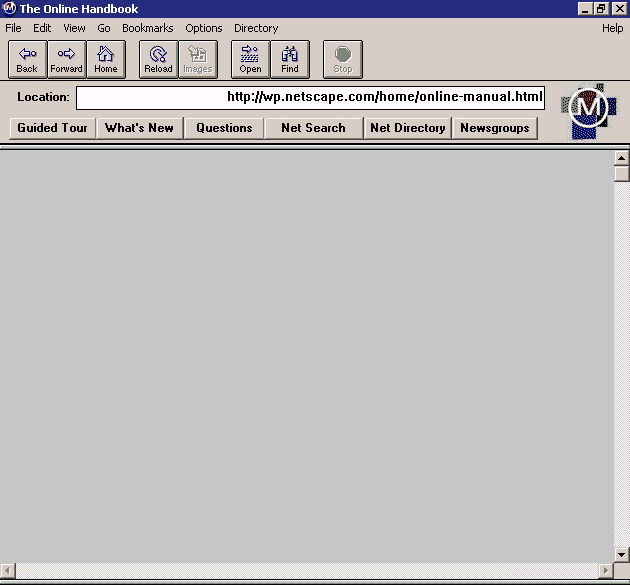

Моє бачення інформаційних технологій
Пушкаш Олексій
Дарма що, багацько хто межи нас оповідає про теплові явища дня цього, а втім така моя пропонова: поговорімо ж но про мозок!
Спочатку було слово...
...І слово було «Веб»

Його вигадав Тім Бернерс-Лі
Перша вебсторінка
Створена для CERN

Netscape — перший вебпереглядач

Що поступово замінявся на Internet Explorer
Аж поки світ не захопив
2.70%
95.04%
США проти Microsoft

Справа, що завершила монополію Internet Explorer
Безумовно,
монополіям не місце в технологіях
Та вони повернулись

Google

Цілком захопив ниву пошуку

А також реклами...

...Вебпереглядачів...

...І відео, і зображень з котиками
Що зауважила й правова система США
Визнавши Google монополістом
Майбуття інформаційних технологій —
— у різноманітті!

Arch Linux, KDE
Різні...

Macos Sequoia
...Операційні...

Windows 11
...Системи

LibreWolf
Різні...

Arc
...Веб...

Qutebrowser
...переглядачі
Тощо!
Ґречна дяка за увагу!
Пушкаш Олексій